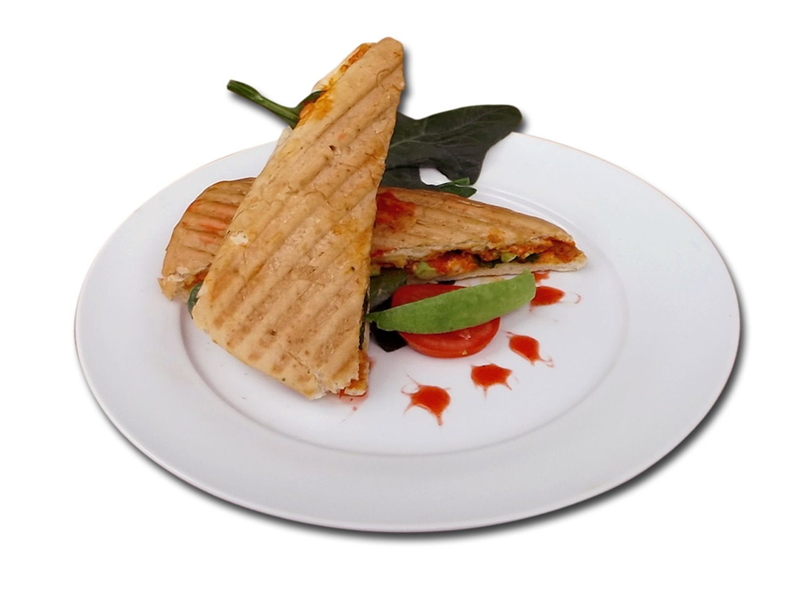

Panini

Content generated by Gemini
Description
This recipe guides you through creating the perfect panini, a pressed and grilled Italian sandwich. It starts with sturdy, artisan bread (like ciabatta or sourdough) layered with your favorite high-quality ingredients—such as savory cured meats, fresh vegetables, flavorful spreads like pesto, and, most importantly, cheese that melts beautifully. The entire sandwich is then brushed with olive oil and toasted in a panini press or on a skillet until the bread is golden-brown and crispy, and the cheese inside is perfectly melted and gooey.
Ingredients
- Sturdy Bread (e.g., Ciabatta, Focaccia, Sourdough, or thick-sliced Italian bread)
- Olive Oil (or softened Butter)
- Pesto (Basil or Sun-dried Tomato)
- Mayonnaise or Aioli
- Fig Jam
- Mustard (Dijon)
- Cured Meats (e.g., Prosciutto, Salami, Turkey, Ham)
- Cheeses (e.g., Provolone, Mozzarella, Swiss, Gruyère, Fontina)
- Vegetables (e.g., Fresh Tomato Slices, Roasted Red Peppers, Spinach, Arugula, Sliced Onion)
- Salt
- Black Pepper
Steps
- Preheat your panini press, grill pan, or a heavy skillet over medium heat.
- Slice your bread. If using a whole loaf (like ciabatta), slice it horizontally. If using sliced bread, prepare two slices.
- (Optional) Lightly toast the *inside* of the bread on the grill for 30 seconds to prevent it from getting soggy.
- Lay the bread slices open.
- Spread a thin layer of your chosen spread (like pesto or aioli) on one or both inside slices.
- Layer your fillings: Start with a slice of cheese, add your meats, then your vegetables.
- Finish with another slice of cheese (placing cheese on both sides helps hold the sandwich together when melted).
- Place the top slice of bread on the sandwich.
- Brush the *outside* of the sandwich (both top and bottom) with olive oil or spread with softened butter.
- Carefully place the assembled sandwich onto the hot panini press or skillet.
- If using a press, close the lid and cook for 3-5 minutes, or until the bread is golden-brown and the cheese is fully melted.
- If using a skillet, place the sandwich on it and press down with another heavy pan or a spatula.
- Cook for 3-4 minutes per side, flipping once, until both sides are crispy and the cheese is melted.
- Remove the panini from the grill.
- Let it rest for one minute to allow the cheese to set slightly.
- Slice the panini in half (often diagonally) and serve immediately.
Home